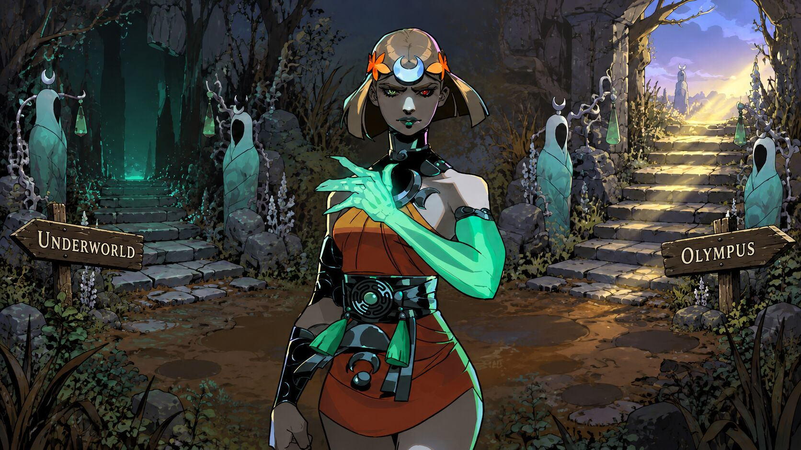
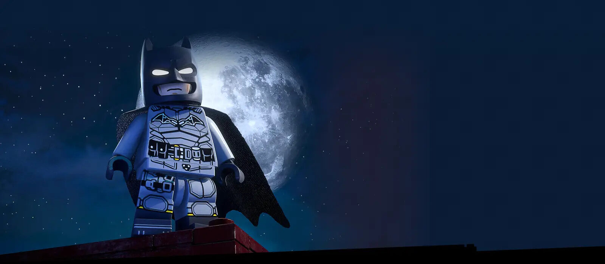

Hades II
Two paths in the game, two sides of Paris. A launch campaign built on the choice at the heart of the game: the Underworld or Olympus.
The assignment
Make a released game's 1.0 launch feel like a new beginning: first write its creative brief, then design its launch campaign.
- Our role in the exercise
- First the game's studio writing the brief, then an external creative agency answering it.
- Course
- Art Direction & Creative Content
- When
- October 2026. Two weeks, team of 4
What we had to deliver
- A creative brief: context, objectives, audience, message and tone
- An art direction: moodboard, palette, typography and logo rules
- Campaign ideas and the chosen big idea
- A deliverables table, a calendar and a budget
- Visuals made in Photoshop and Illustrator
My part
Built in a team of four: the creative brief, the art direction, the three ideas and the launch plan. Visuals made in Photoshop and Illustrator.
The problem
Fans fear more of the same. Newcomers think they missed the first game.
Hades II left early access in September 2025. The campaign had to win two audiences at once: roguelite fans aged 18 to 30 who loved Hades, and story and mythology lovers aged 15 to 35 who never played it.
Our answer
Two paths. One challenge.
Two pop-ups in Paris: the Underworld on the Champs-Élysées and Olympus at La Défense, linked by metro line 1, dressed from one end to the other. Fanta makes a collectible can for each path, with a QR-code quiz and a prize draw.
How we built it
From the brief to the final pitch, in five steps.
Write the creative brief
The game, its two audiences, a SWOT and its competitors, so that any agency understands what the campaign must do.
Set the art direction
A palette taken from the game, three typefaces, logo rules and two key messages, including “Her story. Your first step.”
Compare three ideas
A 14-day portrait countdown, a series of creators sharing their first death, and “Below and Above”. We chose the third: it answers both fears, and the other two become content that feeds it.
Build the activation
Two pop-ups, metro posters along line 1, Fanta cans for each path and a QR-code quiz to enter the draw.
Plan and budget it
A deliverables table with formats and dates, a calendar from Gamescom to launch, and a budget for each part of the campaign.
In numbers
Budgets and KPIs are targets set in the exercise, not real results.
What it shows
For a product or business role.
- Go-to-market: one idea for two audiences
- Brand partnership and budgeting

Next project
LEGO Batman